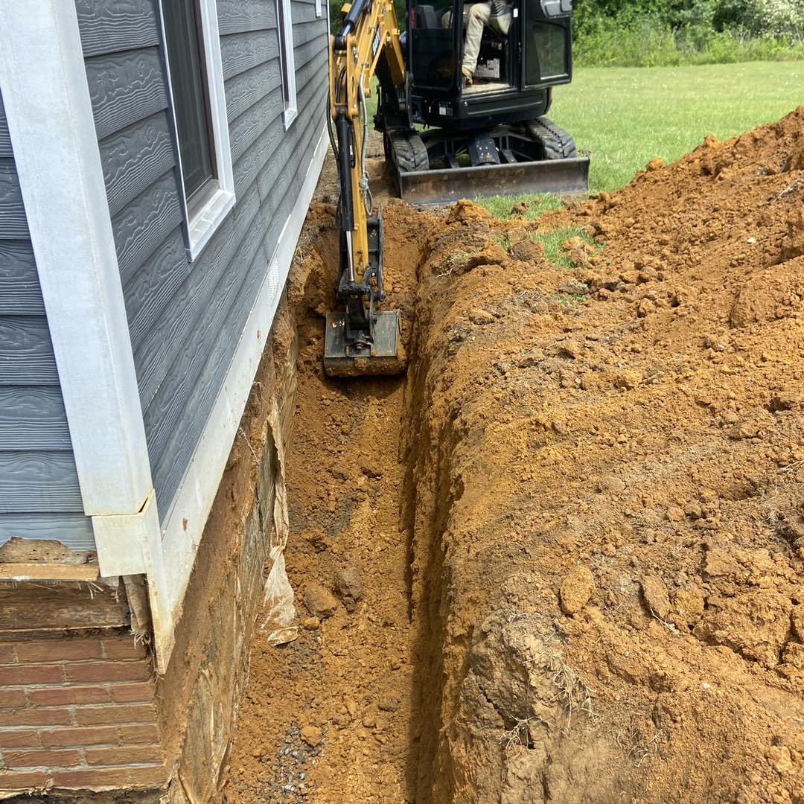
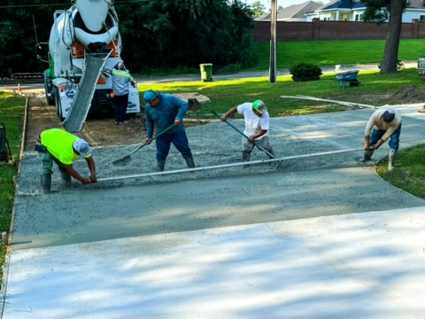
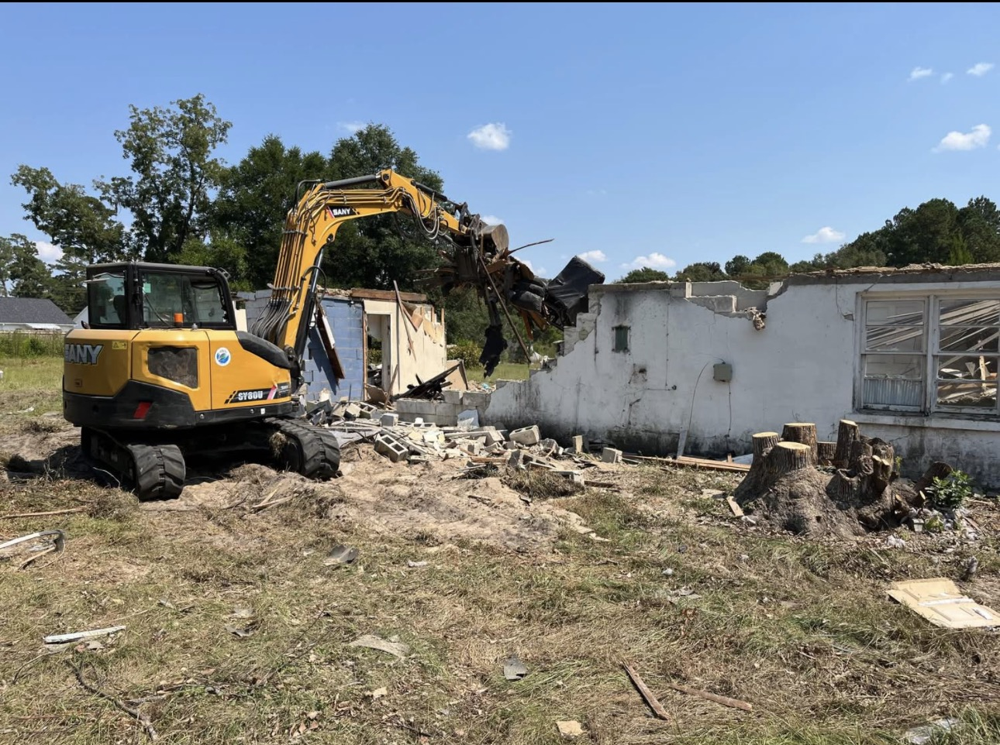
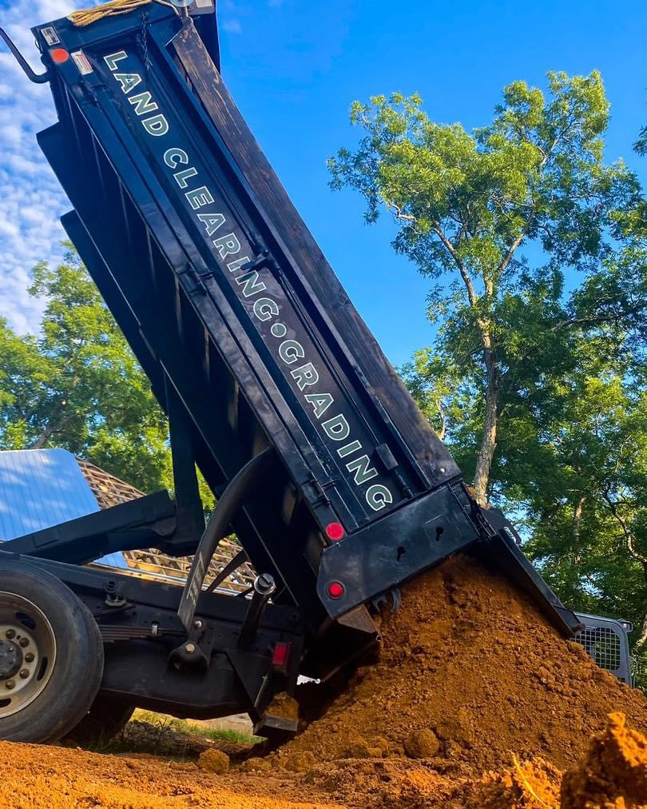
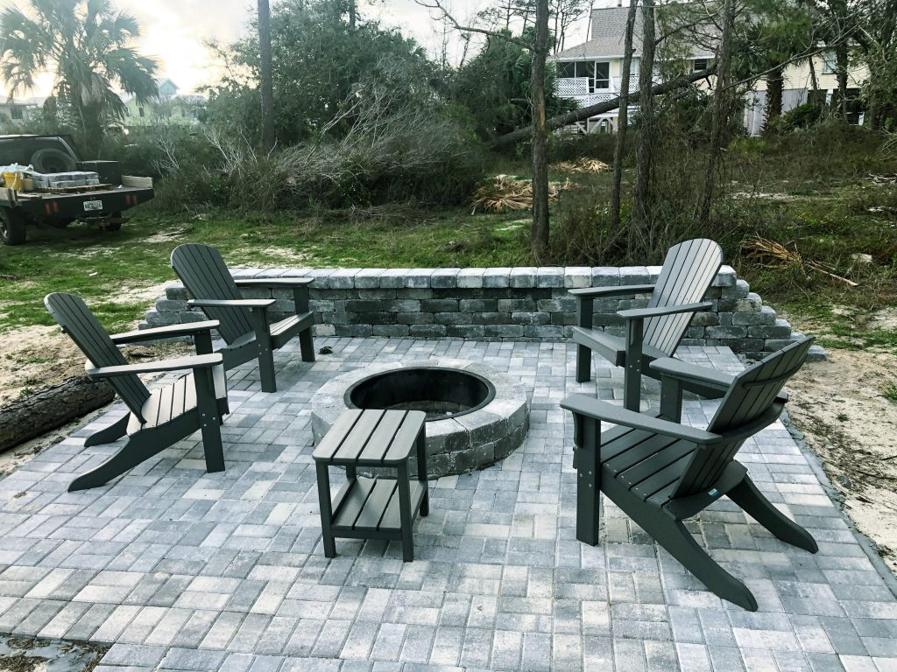

01 Drainage
Below-grade drainage installation
Excavation, tank placement, and pipe routing underway as part of an ECS water-management job.

project gallery —
A look at ECS drainage, earthwork, concrete, clearing, and site-finish projects at different stages of the job.
recent work —
These photographs show real ECS work in progress and completed field areas. They are presented honestly: every final scope depends on the grade, soil, access, water volume, and a responsible place to direct runoff.
01 Drainage
Excavation, tank placement, and pipe routing underway as part of an ECS water-management job.

02 Drainage
ECS reshaped and restored this ballfield area after drainage work to leave a smooth, usable finished grade.

03 Drainage
Careful excavation beside a home created access for foundation drainage and the supporting site work.

04 Driveways
An ECS crew placing, leveling, and shaping concrete during an active driveway project.

05 Site work
An excavator removing an existing structure and opening the area for the site work that follows.

06 Earthwork
Fill material delivered for ground preparation, grade building, and the next stage of construction.

07 Hardscaping
A completed paver gathering space with a built-in fire pit and a finished retaining edge.

08 Land clearing
An ECS excavator opening overgrown ground and preparing the property for the work that follows.
planning a project? —
If you are dealing with standing water, erosion, a failing drive, or a site that needs to be prepared, start by telling ECS what you are seeing.
have a project in mind? —
Share the site conditions, current problem, and work you have in mind. ECS will follow up to discuss the project.
Discuss your project